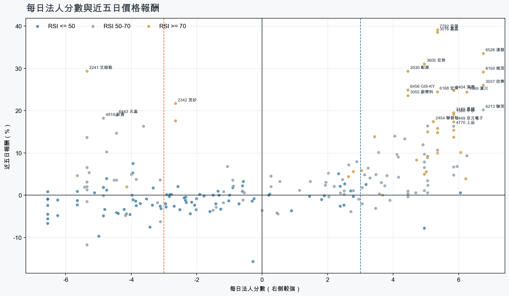
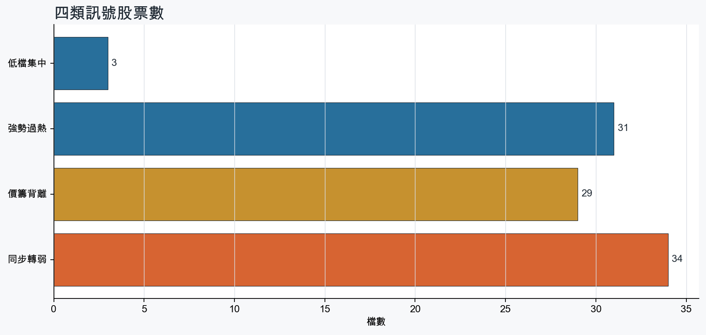
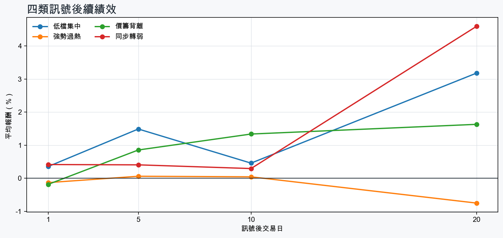

市場情緒偏多
近5日法人合計+3,496,014 張
篩選池上漲比例61.8%
籌碼好 / RSI低3 檔
籌碼差 / 價跌15 檔



EPS × PE VALUATION
法人常用的相對估值
顯示保守、基準與樂觀估值帶，不把單一數字包裝成精準目標價。
最新累計 EPS 依季數年化 × 同產業有效 P/E 的 Q25／中位數／Q75。排除本公司、非正 P/E，並以 1.5×IQR 排除離群值。估值帶是公開資料篩選值，不是法人目標價；未使用分析師預估 EPS。
MOOD × MONEY
情緒與籌碼雷達
熱度代表被討論程度；情緒分與法人方向分開計算。熱門不等於適合追價，樣本不足也不硬判多空。
| 股票 | 情緒 | 討論熱度 | 情緒 × 籌碼 | 情緒 × 基本面 |
|---|---|---|---|---|
| 3037 欣興強勢過熱 | 情緒高漲 +37.9信心 100 | 1003 篇 / 236 留言 / 3 則新聞 | 情籌共振法人分 +6.8 | 基本面與情緒共振基本面分 +3.6 |
| 3189 景碩強勢過熱 | 情緒高漲 +79.1信心 79 | 771 篇 / 56 留言 / 3 則新聞 | 情籌共振法人分 +5.8 | 基本面與情緒共振基本面分 +3.6 |
| 3450 聯鈞同步轉弱 | 情緒高漲 +73.5信心 74 | 771 篇 / 56 留言 / 3 則新聞 | 熱門但法人撤退法人分 -5.7 | 基本面與情緒共振基本面分 +3.6 |
| 3293 鈊象強勢過熱 | 情緒高漲 +62.0信心 62 | 651 篇 / 22 留言 / 3 則新聞 | 情籌共振法人分 +5.0 | 基本面與情緒共振基本面分 +3.6 |
| 6168 宏齊強勢過熱 | 偏多 +26.2信心 60 | 571 篇 / 8 留言 / 3 則新聞 | 情籌共振法人分 +5.3 | 基本面與情緒共振基本面分 +1.2 |
| 1727 中華化強勢過熱 | 中性分歧 +0.0信心 52 | 551 篇 / 6 留言 / 3 則新聞 | 情籌混合法人分 +5.3 | 基本面與情緒分歧基本面分 +3.0 |
| 6179 亞通同步轉弱 | 偏多 +29.7信心 30 | 410 篇 / 0 留言 / 3 則新聞 | 熱門但法人撤退法人分 -5.3 | 基本面與情緒共振基本面分 +3.0 |
| 2324 仁寶同步轉弱 | 中性分歧 +0.0信心 30 | 410 篇 / 0 留言 / 3 則新聞 | 情籌混合法人分 -6.5 | 基本面與情緒分歧基本面分 +3.0 |
| 3376 新日興同步轉弱 | 偏多 +29.7信心 30 | 410 篇 / 0 留言 / 3 則新聞 | 熱門但法人撤退法人分 -6.5 | 情緒領先基本面基本面分 -1.8 |
| 3406 玉晶光同步轉弱 | 中性分歧 +0.0信心 30 | 410 篇 / 0 留言 / 3 則新聞 | 情籌混合法人分 -6.5 | 基本面與情緒分歧基本面分 +3.0 |
| 6446 藥華藥同步轉弱 | 偏空 -29.7信心 30 | 410 篇 / 0 留言 / 3 則新聞 | 情籌雙弱法人分 -4.8 | 基本面佳、情緒悲觀基本面分 +3.6 |
| 2368 金像電價籌背離 | 偏多 +29.7信心 30 | 410 篇 / 0 留言 / 3 則新聞 | 熱門但法人撤退法人分 -3.6 | 基本面與情緒共振基本面分 +3.6 |
01
籌碼好 / RSI低
優先研究基本面；法人續買且價格止穩時，才適合分批觀察。
| 股票 / 確認狀態 | 每日法人分 | 浦男式近似 | 法人加速度 | RSI / 相對強弱 | 量價確認 | 融資融券 | 每週集保確認 | 基本面 | EPS × 同業 P/E 估值 | 情緒 / 情籌 | 近期消息 | 論壇討論 |
|---|---|---|---|---|---|---|---|---|---|---|---|---|
| 2351 順德等待確認 · 86 分籌碼有訊號，但價格尚未確認 | +5.0法人 +3,106 張 / 3 天 | 接近 · 66中期均線偏多；法人籌碼偏多；法人買盤加速；留意未站月線、明顯弱於大盤 | +3,283 張近3日 +3,428 / 連續 +3 日 | 40.1相對大盤 -13.3% | 量比 0.83確認分 -0.2收盤跌破20日線；近20日弱於大盤 | -%融資 - 張 / 融券 - 張 | +5.68 pp1000張 +8.02 pp | 單月營收年增 +61.2%；累計營收年增 +32.5%；2026 Q2 累計 EPS 2.82仍需觀察下一期財報延續性來源：公開資訊觀測站 | 基準 NT$ 154.7估值帶 102.0–267.4現價 219.5 · 估值帶內 · 距基準 -29.5%2026 Q2 累計 EPS 2.82 → 年化 5.64半導體同業 P/E 18.09／27.43／47.41 · n=148 · 信心中等以 Q2 累計 EPS 年化，不等同分析師全年預估來源：TWSE／TPEx 每日本益比 | 樣本不足 +0.0熱度 25 / 信心 10情緒樣本不足 | 【順德法說會重點內容備忘錄】未來展望趨勢 20260825富果直送 · 08/25 | 近期沒有明確提及本股的論壇樣本 |
| 5608 四維航等待確認 · 84 分籌碼有訊號，但價格尚未確認 | +6.0法人 +3,696 張 / 5 天 | 接近 · 75站上月線；中期均線偏多；法人籌碼偏多；留意明顯弱於大盤、量能異常 | +95 張近3日 +2,222 / 連續 +8 日 | 45.7相對大盤 -4.2% | 量比 0.55確認分 +0.4近20日弱於大盤；成交量不足 | -%融資 - 張 / 融券 - 張 | +0.16 pp1000張 +0.92 pp | 單月營收年增 +39.1%；累計營收年增 +13.9%；2026 Q2 累計 EPS 0.32仍需觀察下一期財報延續性來源：公開資訊觀測站 | 不適用年化 EPS 與交易所近四季 EPS 差異過大，可能有股本調整或一次性損益 | 樣本不足 +0.0熱度 0 / 信心 0情緒樣本不足 | 近期沒有通過股票語境篩選的新聞 | 近期沒有明確提及本股的論壇樣本 |
| 2367 燿華等待確認 · 39 分先等基本面止穩 | +3.2法人 +1,618 張 / 5 天 | 未命中 · 36法人籌碼偏多；法人買盤加速；買超具延續性；留意未站月線、中期均線未翻多 | +113 張近3日 +814 / 連續 +5 日 | 40.8相對大盤 -13.2% | 量比 0.54確認分 -4.2收盤跌破20日線；20日線低於60日線；近20日弱於大盤；成交量不足 | -%融資 - 張 / 融券 - 張 | +0.22 pp1000張 -0.26 pp | 單月營收年增 +26.1%累計營收年增 -0.1%；2026 Q2 累計 EPS -0.64；2026 Q2 累計營益率 -6.5%來源：公開資訊觀測站 | 不適用年化 EPS 非正數，不適合使用本益比估值 | 樣本不足 +0.0熱度 0 / 信心 0情緒樣本不足 | 近期沒有通過股票語境篩選的新聞 | 近期沒有明確提及本股的論壇樣本 |
02
籌碼好 / RSI高
趨勢強但不追價，等待量縮、RSI降溫或回測支撐。
| 股票 / 確認狀態 | 每日法人分 | 浦男式近似 | 法人加速度 | RSI / 相對強弱 | 量價確認 | 融資融券 | 每週集保確認 | 基本面 | EPS × 同業 P/E 估值 | 情緒 / 情籌 | 近期消息 | 論壇討論 |
|---|---|---|---|---|---|---|---|---|---|---|---|---|
| 8150 南茂等待拉回 · 100 分等拉回，不追價 | +6.8法人 +65,324 張 / 5 天 | 接近 · 80站上月線；法人籌碼偏多；法人買盤加速；留意中期均線未翻多、RSI過熱 | +1,439 張近3日 +34,064 / 連續 +7 日 | 78.1相對大盤 +19.2% | 量比 2.31確認分 +6.520日線低於60日線 | -%融資 - 張 / 融券 - 張 | +0.22 pp1000張 -0.22 pp | 單月營收年增 +33.3%；累計營收年增 +30.0%；2026 Q2 累計 EPS 2.00仍需觀察下一期財報延續性來源：公開資訊觀測站 | 基準 NT$ 109.7估值帶 72.36–193.1現價 112.0 · 估值帶內 · 距基準 -2.0%2026 Q2 累計 EPS 2.00 → 年化 4.00半導體同業 P/E 18.09／27.43／48.28 · n=148 · 信心中等以 Q2 累計 EPS 年化，不等同分析師全年預估來源：TWSE／TPEx 每日本益比 | 中性分歧 +0.0熱度 41 / 信心 30情籌混合 | 8150 南茂 - 好猶豫要留倉嗎 感覺下週還會往上 - 股市爆料同學會CMoney · 09/24焦點股》南茂：亮燈漲停 股民笑喊中秋禮金靠你了自由財經 · 09/21 | 近期沒有明確提及本股的論壇樣本 |
| 1727 中華化等待拉回 · 94 分等拉回，不追價 | +5.3法人 +1,882 張 / 4 天 | 接近 · 79站上月線；中期均線偏多；法人籌碼偏多；留意法人買盤未加速、量能異常 | -1,287 張近3日 +2,084 / 連續 +3 日 | 74.3相對大盤 +14.4% | 量比 5.51確認分 +1.4法人買盤減速 | -%融資 - 張 / 融券 - 張 | +8.47 pp1000張 +8.31 pp | 單月營收年增 +62.7%；累計營收年增 +26.4%；2026 Q2 累計 EPS 0.66仍需觀察下一期財報延續性來源：公開資訊觀測站 | 基準 NT$ 25.40估值帶 17.62–34.16現價 115.5 · 高於估值帶 · 距基準 -78.0%2026 Q2 累計 EPS 0.66 → 年化 1.32化學工業同業 P/E 13.35／19.24／25.88 · n=33 · 信心中等以 Q2 累計 EPS 年化，不等同分析師全年預估來源：TWSE／TPEx 每日本益比 | 中性分歧 +0.0熱度 55 / 信心 52情籌混合 | 搭上晶圓擴產潮：中華化(1727)有底撐型態，短線狂噴 28%！-Sara WangCMoney投資網誌 · 09/24熱門股－中華化 股價連2日攀揚中時新聞網 · 09/24 | [情報] 1727 中華化 8月自結:0.15 年增:600%PTT Stock · 09-24 · 6 留言 |
| 1560 中砂等待拉回 · 100 分等拉回，不追價 | +5.8法人 +2,843 張 / 4 天 | 接近 · 90站上月線；中期均線偏多；法人籌碼偏多；留意RSI過熱 | +338 張近3日 +1,929 / 連續 +4 日 | 83.5相對大盤 +35.9% | 量比 1.05確認分 +6.5價格、量能與籌碼未見明顯弱項 | -%融資 - 張 / 融券 - 張 | +1.53 pp1000張 +0.93 pp | 單月營收年增 +30.4%；累計營收年增 +24.5%；2026 Q2 累計 EPS 6.44仍需觀察下一期財報延續性來源：公開資訊觀測站 | 基準 NT$ 259.5估值帶 176.1–387.3現價 971.0 · 高於估值帶 · 距基準 -73.3%2026 Q2 累計 EPS 6.44 → 年化 12.88電機機械同業 P/E 13.67／20.15／30.07 · n=72 · 信心中等以 Q2 累計 EPS 年化，不等同分析師全年預估來源：TWSE／TPEx 每日本益比 | 偏多 +29.7熱度 41 / 信心 30情籌共振 | 【09/24券商評等報告彙整】中砂(1560) 今日僅1家券商發布績效評等報告，評價為看多，目標價為1,050元。CMoney投資網誌 · 09/24中砂(1560)毛利率衝15季新高！先進製程市占飆8成，到底「訂單排到 2030」的背後關鍵為何？優分析UAnalyze · 09/23 | 近期沒有明確提及本股的論壇樣本 |
| 2404 漢唐等待拉回 · 100 分等拉回，不追價 | +5.8法人 +2,984 張 / 4 天 | 接近 · 86站上月線；法人籌碼偏多；法人買盤加速；留意中期均線未翻多、動能位置非最佳 | +1,745 張近3日 +2,323 / 連續 +3 日 | 77.2相對大盤 +14.8% | 量比 1.82確認分 +6.520日線低於60日線 | -%融資 - 張 / 融券 - 張 | +0.18 pp1000張 +0.10 pp | 單月營收年增 +59.1%；累計營收年增 +71.6%；2026 Q2 累計 EPS 36.23仍需觀察下一期財報延續性來源：公開資訊觀測站 | 基準 NT$ 1,525估值帶 1,100–2,740現價 1,285 · 估值帶內 · 距基準 +18.7%2026 Q2 累計 EPS 36.23 → 年化 72.46其他電子同業 P/E 15.18／21.05／37.81 · n=67 · 信心中等以 Q2 累計 EPS 年化，不等同分析師全年預估來源：TWSE／TPEx 每日本益比 | 偏多 +19.8熱度 35 / 信心 20情籌混合 | 漢唐美國營收占比拚5成，訂單能見度至2029年台視全球資訊網 · 09/23【10:13 即時新聞】漢唐(2404)股價走強，市場聚焦半導體建廠動能CMoney投資網誌 · 09/23 | 近期沒有明確提及本股的論壇樣本 |
| 6168 宏齊等待拉回 · 100 分等拉回，不追價 | +5.3法人 +17,338 張 / 4 天 | 接近 · 76站上月線；中期均線偏多；法人籌碼偏多；留意量能異常、RSI過熱 | +1,610 張近3日 +10,061 / 連續 +1 日 | 80.7相對大盤 +43.6% | 量比 0.57確認分 +5.2成交量不足 | -%融資 - 張 / 融券 - 張 | +6.25 pp1000張 +5.41 pp | 單月營收年增 +18.5%；累計營收年增 +9.3%；2026 Q2 累計 EPS 0.172026 Q2 累計營益率 -0.4%來源：公開資訊觀測站 | 基準 NT$ 8.01估值帶 4.30–12.89現價 44.00 · 高於估值帶 · 距基準 -81.8%2026 Q2 累計 EPS 0.17 → 年化 0.34光電同業 P/E 12.66／23.57／37.91 · n=70 · 信心中等以 Q2 累計 EPS 年化，不等同分析師全年預估來源：TWSE／TPEx 每日本益比 | 偏多 +26.2熱度 57 / 信心 60情籌共振 | 台股洗盤結束就是【噴】、全友、 宏齊、金居、國巨、天二科news.cnyes.com · 09/24【11:34 即時新聞】宏齊(6168)股價續強，主力短線調節成盤中焦點CMoney投資網誌 · 09/24 | [情報] 6168 宏齊 8月自結:0.02 連4漲停中PTT Stock · 09-21 · 8 留言 |
| 2030 彰源等待拉回 · 100 分等拉回，不追價 | +4.5法人 +2,962 張 / 3 天 | 接近 · 80站上月線；中期均線偏多；法人籌碼偏多；留意量能異常、RSI過熱 | +3,685 張近3日 +3,804 / 連續 +1 日 | 79.8相對大盤 +27.4% | 量比 3.63確認分 +5.3價格、量能與籌碼未見明顯弱項 | -%融資 - 張 / 融券 - 張 | +1.83 pp1000張 +1.53 pp | 單月營收年增 +57.7%；累計營收年增 +20.4%；2026 Q2 累計 EPS 1.66仍需觀察下一期財報延續性來源：公開資訊觀測站 | 基準 NT$ 41.77估值帶 33.53–49.30現價 30.40 · 低於估值帶 · 距基準 +37.4%2026 Q2 累計 EPS 1.66 → 年化 3.32鋼鐵工業同業 P/E 10.10／12.58／14.85 · n=27 · 信心中等以 Q2 累計 EPS 年化，不等同分析師全年預估來源：TWSE／TPEx 每日本益比 | 中性分歧 +0.0熱度 41 / 信心 30情籌混合 | 〈焦點股〉中鋼看好鋼市供需結構好轉 鋼鐵族群抗跌彰源飆漲停news.cnyes.com · 09/24【09:19 即時新聞】彰源(2030)亮燈漲停，鋼鐵族群走強成盤中焦點CMoney投資網誌 · 09/24 | 近期沒有明確提及本股的論壇樣本 |
| 8050 廣積等待拉回 · 100 分等拉回，不追價 | +6.2法人 +2,037 張 / 5 天 | 接近 · 81站上月線；法人籌碼偏多；法人買盤加速；留意中期均線未翻多、動能位置非最佳 | +73 張近3日 +1,505 / 連續 +10 日 | 76.1相對大盤 +2.0% | 量比 2.26確認分 +3.520日線低於60日線 | -1.0%融資 -39 張 / 融券 +1 張 | +0.15 pp1000張 -0.13 pp | 單月營收年增 +94.5%；累計營收年增 +17.6%；2026 Q2 累計 EPS 2.692026 Q2 累計營益率 5.8%來源：公開資訊觀測站 | 基準 NT$ 87.10估值帶 66.50–128.4現價 61.20 · 低於估值帶 · 距基準 +42.3%2026 Q2 累計 EPS 2.69 → 年化 5.38電腦及週邊同業 P/E 12.36／16.19／23.86 · n=77 · 信心較低以 Q2 累計 EPS 年化，不等同分析師全年預估；年化 EPS 為交易所近四季 EPS 的 2.05 倍，需保守解讀來源：TWSE／TPEx 每日本益比 | 偏多 +19.8熱度 35 / 信心 20情籌混合 | 【12:28 即時新聞】廣積(8050)盤中走強，外資與主力買盤成焦點CMoney投資網誌 · 09/24料件補償金挹注純利，廣積Q2獲利樂觀可期- 新聞MoneyDJ · 08/07 | 近期沒有明確提及本股的論壇樣本 |
| 6672 騰輝電子-KY等待拉回 · 100 分等拉回，不追價 | +5.0法人 +5,325 張 / 4 天 | 命中 · 91站上月線；中期均線偏多；法人籌碼偏多；留意量能尚未確認、動能位置非最佳 | +1,188 張近3日 +2,507 / 連續 +2 日 | 70.5相對大盤 +15.1% | 量比 2.75確認分 +5.8價格、量能與籌碼未見明顯弱項 | -%融資 - 張 / 融券 - 張 | +1.02 pp1000張 -2.21 pp | 單月營收年增 +133.2%；累計營收年增 +53.6%；2026 Q2 累計 EPS 4.75仍需觀察下一期財報延續性來源：公開資訊觀測站 | 基準 NT$ 248.8估值帶 171.0–415.0現價 337.5 · 估值帶內 · 距基準 -26.3%2026 Q2 累計 EPS 4.75 → 年化 9.50電子零組件同業 P/E 18.00／26.19／43.68 · n=150 · 信心中等以 Q2 累計 EPS 年化，不等同分析師全年預估來源：TWSE／TPEx 每日本益比 | 偏多 +19.8熱度 35 / 信心 20情籌混合 | 騰輝電子-KY Q4量產電源材，昆山擴產衝M9台視全球資訊網 · 09/24【09:39 即時新聞】騰輝電子-KY(6672)盤中走強聚焦AI高速材料擴產CMoney投資網誌 · 09/24 | 近期沒有明確提及本股的論壇樣本 |
| 2449 京元電子等待拉回 · 96 分等拉回，不追價 | +5.8法人 +48,376 張 / 4 天 | 命中 · 89站上月線；中期均線偏多；法人籌碼偏多；留意法人買盤未加速、動能位置非最佳 | -18,755 張近3日 +16,094 / 連續 +1 日 | 71.7相對大盤 +20.9% | 量比 0.92確認分 +2.5法人買盤減速 | -%融資 - 張 / 融券 - 張 | +0.71 pp1000張 +0.85 pp | 單月營收年增 +31.6%；累計營收年增 +35.5%；2026 Q2 累計 EPS 3.91仍需觀察下一期財報延續性來源：公開資訊觀測站 | 基準 NT$ 214.5估值帶 141.5–377.6現價 311.0 · 估值帶內 · 距基準 -31.0%2026 Q2 累計 EPS 3.91 → 年化 7.82半導體同業 P/E 18.09／27.43／48.28 · n=148 · 信心中等以 Q2 累計 EPS 年化，不等同分析師全年預估來源：TWSE／TPEx 每日本益比 | 偏多 +29.7熱度 41 / 信心 30情籌共振 | 京元電子卡位旗艦手機測試，AI晶片訂單續強台視全球資訊網 · 09/24京元電子到處砸錢，還要赴美設廠，到底看到多少AI訂單？理財周刊 · 09/24 | 近期沒有明確提及本股的論壇樣本 |
| 6526 達發等待拉回 · 100 分等拉回，不追價 | +6.8法人 +5,562 張 / 5 天 | 接近 · 80站上月線；中期均線偏多；法人籌碼偏多；留意量能異常、RSI過熱 | +1,517 張近3日 +3,585 / 連續 +6 日 | 89.6相對大盤 +32.9% | 量比 3.35確認分 +5.3價格、量能與籌碼未見明顯弱項 | -%融資 - 張 / 融券 - 張 | +0.08 pp1000張 +0.02 pp | 單月營收年增 +26.1%；累計營收年增 +12.5%；2026 Q2 累計 EPS 9.72仍需觀察下一期財報延續性來源：公開資訊觀測站 | 基準 NT$ 533.2估值帶 351.7–938.6現價 840.0 · 估值帶內 · 距基準 -36.5%2026 Q2 累計 EPS 9.72 → 年化 19.44半導體同業 P/E 18.09／27.43／48.28 · n=148 · 信心中等以 Q2 累計 EPS 年化，不等同分析師全年預估來源：TWSE／TPEx 每日本益比 | 樣本不足 +0.0熱度 25 / 信心 10情緒樣本不足 | 《半導體》注意股：達發 近5日漲33.55%富聯網 · 09/24 | 近期沒有明確提及本股的論壇樣本 |
| 2855 統一證等待拉回 · 96 分等拉回，不追價 | +6.1法人 +13,269 張 / 5 天 | 接近 · 83站上月線；中期均線偏多；法人籌碼偏多；留意法人買盤未加速、RSI過熱 | -5,985 張近3日 +4,476 / 連續 +6 日 | 80.3相對大盤 +16.1% | 量比 1.00確認分 +2.5法人買盤減速 | -%融資 - 張 / 融券 - 張 | +1.21 pp1000張 +1.14 pp | 單月營收年增 +109.9%；累計營收年增 +217.4%；2026 Q2 累計 EPS 6.96仍需觀察下一期財報延續性來源：公開資訊觀測站 | 基準 NT$ 183.3估值帶 117.9–223.6現價 57.80 · 低於估值帶 · 距基準 +217.2%2026 Q2 累計 EPS 6.96 → 年化 13.92金融保險同業 P/E 8.47／13.17／16.06 · n=39 · 信心中等以 Q2 累計 EPS 年化，不等同分析師全年預估來源：TWSE／TPEx 每日本益比 | 樣本不足 +0.0熱度 0 / 信心 0情緒樣本不足 | 近期沒有通過股票語境篩選的新聞 | 近期沒有明確提及本股的論壇樣本 |
| 3037 欣興等待拉回 · 99 分等拉回，不追價 | +6.8法人 +19,418 張 / 5 天 | 接近 · 70站上月線；中期均線偏多；法人籌碼偏多；留意明顯弱於大盤、量能尚未確認 | +7,755 張近3日 +13,279 / 連續 +5 日 | 84.4相對大盤 -4.4% | 量比 0.77確認分 +2.7近20日弱於大盤 | -%融資 - 張 / 融券 - 張 | +0.34 pp1000張 +0.61 pp | 單月營收年增 +56.3%；累計營收年增 +34.2%；2026 Q2 累計 EPS 11.70仍需觀察下一期財報延續性來源：公開資訊觀測站 | 基準 NT$ 611.0估值帶 420.3–1,017現價 1,185 · 高於估值帶 · 距基準 -48.4%2026 Q2 累計 EPS 11.70 → 年化 23.40電子零組件同業 P/E 17.96／26.11／43.48 · n=149 · 信心中等以 Q2 累計 EPS 年化，不等同分析師全年預估來源：TWSE／TPEx 每日本益比 | 情緒高漲 +37.9熱度 100 / 信心 100情籌共振 | 小編下班聊點錢》南電、欣興、景碩...ABF三雄誰還有肉？外資喊他1250元目標價：EPS10元變48元旺得富理財網 · 09/24PCB紅通通！「這檔」8月獲利暴漲840%攜騰輝漲停創高 景碩一度亮燈、欣興連5漲26.1%Yahoo股市 · 09/24 | [新聞] 欣興點燈！開盤鎖漲停價1120元 狂吸60億PTT Stock · 09-22 · 133 留言[新聞] 焦點股》欣興：封閉「洗產地」跳空缺口PTT Stock · 09-23 · 69 留言 |
| 3035 智原等待拉回 · 100 分等拉回，不追價 | +5.8法人 +7,333 張 / 4 天 | 接近 · 82站上月線；法人籌碼偏多；法人買盤加速；留意中期均線未翻多、動能位置非最佳 | +267 張近3日 +4,546 / 連續 +1 日 | 72.5相對大盤 +12.2% | 量比 1.24確認分 +5.820日線低於60日線 | -%融資 - 張 / 融券 - 張 | -0.02 pp1000張 -0.40 pp | 單月營收年增 +29.9%；2026 Q2 累計 EPS 1.16累計營收年增 -41.1%；2026 Q2 累計營益率 6.2%來源：公開資訊觀測站 | 基準 NT$ 63.64估值帶 41.97–110.0現價 206.5 · 高於估值帶 · 距基準 -69.2%2026 Q2 累計 EPS 1.16 → 年化 2.32半導體同業 P/E 18.09／27.43／47.41 · n=148 · 信心中等以 Q2 累計 EPS 年化，不等同分析師全年預估來源：TWSE／TPEx 每日本益比 | 樣本不足 +0.0熱度 0 / 信心 0情緒樣本不足 | 近期沒有通過股票語境篩選的新聞 | 近期沒有明確提及本股的論壇樣本 |
| 3189 景碩等待拉回 · 100 分等拉回，不追價 | +5.8法人 +22,390 張 / 4 天 | 命中 · 91站上月線；中期均線偏多；法人籌碼偏多；留意動能位置非最佳 | +20,915 張近3日 +19,992 / 連續 +3 日 | 74.6相對大盤 +0.5% | 量比 2.19確認分 +4.6價格、量能與籌碼未見明顯弱項 | -%融資 - 張 / 融券 - 張 | -1.44 pp1000張 -2.78 pp | 單月營收年增 +40.6%；累計營收年增 +32.1%；2026 Q2 累計 EPS 3.74仍需觀察下一期財報延續性來源：公開資訊觀測站 | 基準 NT$ 205.7估值帶 136.1–360.6現價 962.0 · 高於估值帶 · 距基準 -78.6%2026 Q2 累計 EPS 3.74 → 年化 7.48半導體同業 P/E 18.19／27.50／48.21 · n=149 · 信心中等以 Q2 累計 EPS 年化，不等同分析師全年預估來源：TWSE／TPEx 每日本益比 | 情緒高漲 +79.1熱度 77 / 信心 79情籌共振 | 小編下班聊點錢》南電、欣興、景碩...ABF三雄誰還有肉？外資喊他1250元目標價：EPS10元變48元旺得富理財網 · 09/243189 景碩- 00991A只買景碩！ABF重新成為資金焦點- 股市爆料同學會CMoney · 09/24 | [情報] 3189 景碩 8月自結:1.59 年增:297.50%PTT Stock · 09-23 · 56 留言 |
| 3293 鈊象等待拉回 · 100 分等拉回，不追價 | +5.0法人 +4,062 張 / 3 天 | 接近 · 86站上月線；法人籌碼偏多；法人買盤加速；留意中期均線未翻多、動能位置非最佳 | +2,837 張近3日 +4,112 / 連續 +3 日 | 75.5相對大盤 +3.3% | 量比 1.97確認分 +5.320日線低於60日線 | -1.0%融資 -26 張 / 融券 +0 張 | -0.88 pp1000張 -1.53 pp | 單月營收年增 +24.8%；累計營收年增 +18.1%；2026 Q2 累計 EPS 22.77仍需觀察下一期財報延續性來源：公開資訊觀測站 | 基準 NT$ 651.2估值帶 504.1–1,387現價 761.0 · 估值帶內 · 距基準 -14.4%2026 Q2 累計 EPS 22.77 → 年化 45.54文化創意同業 P/E 11.07／14.30／30.45 · n=14 · 信心中等以 Q2 累計 EPS 年化，不等同分析師全年預估來源：TWSE／TPEx 每日本益比 | 情緒高漲 +62.0熱度 65 / 信心 62情籌共振 | AI助攻研發效率！鈊象海外布局加速 法人上修獲利、調高目標價Yahoo股市 · 09/24兼具營運動能及殖利率題材 法人調高鈊象目標價UDN · 09/24 | [新聞] 受惠美國、東南亞市場成長 鈊象下季營運PTT Stock · 09-24 · 22 留言 |
03
籌碼差 / 股價上漲
可能是事件行情或軋空；沒有籌碼改善前避免追高。
| 股票 / 確認狀態 | 每日法人分 | 浦男式近似 | 法人加速度 | RSI / 相對強弱 | 量價確認 | 融資融券 | 每週集保確認 | 基本面 | EPS × 同業 P/E 估值 | 情緒 / 情籌 | 近期消息 | 論壇討論 |
|---|---|---|---|---|---|---|---|---|---|---|---|---|
| 2241 艾姆勒風險警示 · 36 分背離警戒，避免追高 | -5.3法人 -1,918 張 / 1 天 | 未命中 · 30站上月線；明顯強於大盤；流動性足夠；留意中期均線未翻多、法人籌碼偏弱 | -1,970 張近3日 -1,886 / 連續 -4 日 | 80.4相對大盤 +18.6% | 量比 4.00確認分 +1.420日線低於60日線；法人買盤減速 | -%融資 - 張 / 融券 - 張 | -0.45 pp1000張 +0.74 pp | 單月營收年增 +47.3%；累計營收年增 +46.5%2026 Q2 累計 EPS -0.42；2026 Q2 累計營益率 -8.3%來源：公開資訊觀測站 | 不適用年化 EPS 非正數，不適合使用本益比估值 | 樣本不足 +0.0熱度 0 / 信心 0情緒樣本不足 | 近期沒有通過股票語境篩選的新聞 | 近期沒有明確提及本股的論壇樣本 |
| 6443 元晶風險警示 · 25 分背離警戒，避免追高 | -4.5法人 -10,622 張 / 2 天 | 未命中 · 45站上月線；相對大盤偏強；量價健康；留意中期均線未翻多、法人籌碼偏弱 | -12,732 張近3日 -11,819 / 連續 -1 日 | 67.2相對大盤 +1.0% | 量比 2.28確認分 +0.820日線低於60日線；法人買盤減速 | -%融資 - 張 / 融券 - 張 | -1.12 pp1000張 -1.50 pp | 尚無明確成長訊號單月營收年增 -23.0%；累計營收年增 -36.2%；2026 Q2 累計 EPS -0.60來源：公開資訊觀測站 | 不適用年化 EPS 非正數，不適合使用本益比估值 | 中性分歧 +0.0熱度 35 / 信心 20情籌混合 | 元晶營收比去年大減，股價近期大漲，在漲什麼？理財周刊 · 09/24太陽能紅綠交錯！「這檔」Q3出貨旺亮燈漲停茂矽橫跨記憶體同步亮燈、元晶、中美晶逆風挫逾3%Yahoo股市 · 09/23 | 近期沒有明確提及本股的論壇樣本 |
| 4919 新唐風險警示 · 41 分背離警戒，避免追高 | -4.8法人 -15,056 張 / 1 天 | 未命中 · 50站上月線；明顯強於大盤；量價健康；留意中期均線未翻多、法人籌碼偏弱 | -1,047 張近3日 -8,096 / 連續 -2 日 | 67.4相對大盤 +6.7% | 量比 1.90確認分 +2.220日線低於60日線；法人買盤減速 | -%融資 - 張 / 融券 - 張 | +0.47 pp1000張 +0.71 pp | 單月營收年增 +12.1%；累計營收年增 +1.0%2026 Q2 累計 EPS -0.57；2026 Q2 累計營益率 -2.8%來源：公開資訊觀測站 | 不適用年化 EPS 非正數，不適合使用本益比估值 | 樣本不足 +0.0熱度 25 / 信心 10情緒樣本不足 | 4919 新唐- 進入股市這麼多年，看過太多同學在市場裡大起大落。大家剛開始做... - 股市爆料同學會CMoney · 09/24 | 近期沒有明確提及本股的論壇樣本 |
| 2368 金像電風險警示 · 58 分背離警戒，避免追高 | -3.6法人 -3,822 張 / 2 天 | 接近 · 77站上月線；中期均線偏多；法人買盤加速；留意法人籌碼偏弱、買超延續不足 | +16 張近3日 -3,599 / 連續 -1 日 | 55.3相對大盤 +2.5% | 量比 1.78確認分 +3.2價格、量能與籌碼未見明顯弱項 | -%融資 - 張 / 融券 - 張 | -1.01 pp1000張 -0.47 pp | 單月營收年增 +76.4%；累計營收年增 +71.2%；2026 Q2 累計 EPS 16.17仍需觀察下一期財報延續性來源：公開資訊觀測站 | 基準 NT$ 847.0估值帶 582.1–1,437現價 1,105 · 估值帶內 · 距基準 -23.4%2026 Q2 累計 EPS 16.17 → 年化 32.34電子零組件同業 P/E 18.00／26.19／44.44 · n=150 · 信心中等以 Q2 累計 EPS 年化，不等同分析師全年預估來源：TWSE／TPEx 每日本益比 | 偏多 +29.7熱度 41 / 信心 30熱門但法人撤退 | 是訊號？台股衝破48K 瑤池金母先跑了日月光、台燿、金像電、緯穎...00981A大砍「這3檔」提走23.6億元- 上市櫃旺得富理財網 · 09/24熱門股》Q4高階新品出貨 金像電奔漲停自由財經 · 09/24 | 近期沒有明確提及本股的論壇樣本 |
| 2406 國碩風險警示 · 36 分背離警戒，避免追高 | -4.5法人 -4,680 張 / 2 天 | 接近 · 60站上月線；相對大盤偏強；量價健康；留意中期均線未翻多、法人籌碼偏弱 | -5,042 張近3日 -4,846 / 連續 -3 日 | 69.9相對大盤 +1.5% | 量比 2.00確認分 -0.620日線低於60日線；法人買盤減速 | -%融資 - 張 / 融券 - 張 | -0.86 pp1000張 -1.20 pp | 單月營收年增 +86.1%；累計營收年增 +114.9%；2026 Q2 累計 EPS 0.332026 Q2 累計營益率 4.9%來源：公開資訊觀測站 | 基準 NT$ 15.56估值帶 8.36–25.02現價 30.50 · 高於估值帶 · 距基準 -49.0%2026 Q2 累計 EPS 0.33 → 年化 0.66光電同業 P/E 12.66／23.57／37.91 · n=70 · 信心較低以 Q2 累計 EPS 年化，不等同分析師全年預估；年化 EPS 為交易所近四季 EPS 的 3.67 倍，需保守解讀來源：TWSE／TPEx 每日本益比 | 中性分歧 +0.0熱度 41 / 信心 30情籌混合 | 熱門股》主力進場大買 國碩衝漲停自由時報 · 09/22熱門股／馬斯克看旺太陽能！元晶、國碩等飆漲停聯合再生、茂迪齊揚| 產經非凡新聞台 · 09/21 | 近期沒有明確提及本股的論壇樣本 |
| 8110 華東風險警示 · 36 分背離警戒，避免追高 | -5.3法人 -7,348 張 / 1 天 | 未命中 · 55站上月線；相對大盤偏強；基本面有支撐；留意中期均線未翻多、法人籌碼偏弱 | -5,225 張近3日 -7,237 / 連續 -4 日 | 63.7相對大盤 +1.4% | 量比 0.77確認分 +0.120日線低於60日線；法人買盤減速 | -%融資 - 張 / 融券 - 張 | -0.59 pp1000張 -0.29 pp | 單月營收年增 +24.8%；累計營收年增 +15.5%；2026 Q2 累計 EPS 2.592026 Q2 累計營益率 2.7%來源：公開資訊觀測站 | 基準 NT$ 142.5估值帶 95.52–250.1現價 49.00 · 低於估值帶 · 距基準 +190.8%2026 Q2 累計 EPS 2.59 → 年化 5.18半導體同業 P/E 18.44／27.51／48.28 · n=148 · 信心中等以 Q2 累計 EPS 年化，不等同分析師全年預估來源：TWSE／TPEx 每日本益比 | 中性分歧 +0.0熱度 41 / 信心 30情籌混合 | 封測股炸了！6大廠砸近6千億搶AI大單 華東、南茂漲停「這波還沒完」工商時報 · 09/21焦點股》華東：封測需求看旺 漲停站上月線自由財經 · 09/18 | 近期沒有明確提及本股的論壇樣本 |
| 8028 昇陽半導體風險警示 · 62 分背離警戒，避免追高 | -4.8法人 -6,399 張 / 2 天 | 接近 · 72站上月線；法人買盤加速；明顯強於大盤；留意中期均線未翻多、法人籌碼偏弱 | +1,606 張近3日 -3,097 / 連續 +1 日 | 65.5相對大盤 +3.5% | 量比 2.01確認分 +5.420日線低於60日線 | -%融資 - 張 / 融券 - 張 | -2.94 pp1000張 -2.39 pp | 單月營收年增 +25.6%；累計營收年增 +29.1%；2026 Q2 累計 EPS 3.32仍需觀察下一期財報延續性來源：公開資訊觀測站 | 基準 NT$ 182.1估值帶 120.1–315.3現價 269.0 · 估值帶內 · 距基準 -32.3%2026 Q2 累計 EPS 3.32 → 年化 6.64半導體同業 P/E 18.09／27.43／47.48 · n=148 · 信心中等以 Q2 累計 EPS 年化，不等同分析師全年預估來源：TWSE／TPEx 每日本益比 | 偏多 +29.7熱度 41 / 信心 30熱門但法人撤退 | 昇陽半導體 2026-09-10 法說會BigGo 財經 · 09/09【10:36 即時新聞】昇陽半導體(8028) 股價走強，焦點在再生晶圓成長與獲利動能CMoney投資網誌 · 09/24 | 近期沒有明確提及本股的論壇樣本 |
| 3645 達邁風險警示 · 24 分背離警戒，避免追高 | -5.3法人 -2,355 張 / 1 天 | 未命中 · 52站上月線；相對大盤偏強；量價健康；留意中期均線未翻多、法人籌碼偏弱 | -2,882 張近3日 -2,561 / 連續 -3 日 | 54.6相對大盤 +0.4% | 量比 1.85確認分 +0.620日線低於60日線；法人買盤減速 | -%融資 - 張 / 融券 - 張 | -6.70 pp1000張 -7.52 pp | 2026 Q2 累計 EPS 1.52；2026 Q2 累計營益率 21.3%單月營收年增 -11.0%；累計營收年增 -2.7%來源：公開資訊觀測站 | 基準 NT$ 79.62估值帶 54.72–135.1現價 73.30 · 估值帶內 · 距基準 +8.6%2026 Q2 累計 EPS 1.52 → 年化 3.04電子零組件同業 P/E 18.00／26.19／44.44 · n=150 · 信心中等以 Q2 累計 EPS 年化，不等同分析師全年預估來源：TWSE／TPEx 每日本益比 | 中性分歧 +0.0熱度 35 / 信心 20情籌混合 | Meta智慧眼鏡好戲將上場宏達電.達邁股價衝| 科技非凡新聞台 · 09/24【10:44 即時新聞】達邁(3645)股價走強，市場聚焦軟板與PI材料供應鏈CMoney投資網誌 · 09/23 | 近期沒有明確提及本股的論壇樣本 |
| 4991 環宇-KY風險警示 · 19 分背離警戒，避免追高 | -4.0法人 -2,100 張 / 2 天 | 未命中 · 41中期均線偏多；基本面有支撐；流動性足夠；留意未站月線、法人籌碼偏弱 | -2,270 張近3日 -2,268 / 連續 -3 日 | 42.9相對大盤 -18.6% | 量比 0.67確認分 -3.6收盤跌破20日線；近20日弱於大盤；法人買盤減速 | -2.4%融資 -231 張 / 融券 -15 張 | -3.77 pp1000張 -2.74 pp | 單月營收年增 +45.6%；累計營收年增 +45.6%；2026 Q2 累計 EPS 2.58仍需觀察下一期財報延續性來源：公開資訊觀測站 | 基準 NT$ 141.9估值帶 93.86–248.8現價 463.5 · 高於估值帶 · 距基準 -69.4%2026 Q2 累計 EPS 2.58 → 年化 5.16半導體同業 P/E 18.19／27.50／48.21 · n=149 · 信心中等以 Q2 累計 EPS 年化，不等同分析師全年預估來源：TWSE／TPEx 每日本益比 | 中性分歧 +9.9熱度 41 / 信心 30情籌混合 | 【13:11 即時新聞】環宇-KY(4991)股價走強，市場聚焦化合物晶圓代工成長動能CMoney投資網誌 · 09/24環宇-KY自結7月虧損0.18元 外資仍喊買看好光通訊發展news.cnyes.com · 08/31 | 近期沒有明確提及本股的論壇樣本 |
| 6244 茂迪風險警示 · 37 分背離警戒，避免追高 | -5.3法人 -3,810 張 / 1 天 | 未命中 · 53站上月線；法人買盤加速；量價健康；留意中期均線未翻多、法人籌碼偏弱 | +2,301 張近3日 -753 / 連續 -1 日 | 51.5相對大盤 -7.7% | 量比 1.70確認分 +1.120日線低於60日線；近20日弱於大盤 | -1.0%融資 -114 張 / 融券 -1 張 | -0.86 pp1000張 -1.59 pp | 累計營收年增 +14.1%；2026 Q2 累計 EPS 0.46；2026 Q2 累計營益率 8.6%單月營收年增 -0.4%來源：公開資訊觀測站 | 基準 NT$ 20.95估值帶 11.59–34.15現價 23.55 · 估值帶內 · 距基準 -11.1%2026 Q2 累計 EPS 0.46 → 年化 0.92光電同業 P/E 12.60／22.77／37.12 · n=69 · 信心較低以 Q2 累計 EPS 年化，不等同分析師全年預估；年化 EPS 為交易所近四季 EPS 的 2.19 倍，需保守解讀來源：TWSE／TPEx 每日本益比 | 中性分歧 +0.0熱度 35 / 信心 20情籌混合 | 熱門股／馬斯克看旺太陽能！元晶、國碩等飆漲停聯合再生、茂迪齊揚| 產經非凡新聞台 · 09/21【09/23 申報轉讓】茂迪(6244)董事李智貴於23日申報轉讓茂迪股票800張-CMoney 小編CMoney投資網誌 · 09/23 | 近期沒有明確提及本股的論壇樣本 |
| 8112 至上風險警示 · 0 分背離警戒，避免追高 | -6.5法人 -7,599 張 / 0 天 | 未命中 · 20基本面有支撐；流動性足夠；留意未站月線、中期均線未翻多 | -543 張近3日 -4,798 / 連續 -10 日 | 17.6相對大盤 -14.2% | 量比 0.48確認分 -5.5收盤跌破20日線；20日線低於60日線；近20日弱於大盤；成交量不足；法人買盤減速 | -%融資 - 張 / 融券 - 張 | -6.52 pp1000張 -6.61 pp | 單月營收年增 +154.8%；累計營收年增 +177.4%；2026 Q2 累計 EPS 9.452026 Q2 累計營益率 3.2%來源：公開資訊觀測站 | 基準 NT$ 235.5估值帶 198.4–435.1現價 83.50 · 低於估值帶 · 距基準 +182.0%2026 Q2 累計 EPS 9.45 → 年化 18.90電子通路同業 P/E 10.50／12.46／23.02 · n=31 · 信心中等以 Q2 累計 EPS 年化，不等同分析師全年預估來源：TWSE／TPEx 每日本益比 | 樣本不足 +0.0熱度 0 / 信心 0情緒樣本不足 | 近期沒有通過股票語境篩選的新聞 | 近期沒有明確提及本股的論壇樣本 |
| 6488 環球晶風險警示 · 14 分背離警戒，避免追高 | -4.8法人 -7,351 張 / 2 天 | 未命中 · 42站上月線；量價健康；基本面偏正向；留意中期均線未翻多、法人籌碼偏弱 | -3,448 張近3日 -6,440 / 連續 -2 日 | 43.4相對大盤 -5.8% | 量比 0.99確認分 -3.120日線低於60日線；近20日弱於大盤；法人買盤減速；融資單日增幅偏高 | +12.7%融資 +1,754 張 / 融券 +62 張 | -2.81 pp1000張 -2.27 pp | 單月營收年增 +7.6%；2026 Q2 累計 EPS 11.87；2026 Q2 累計營益率 9.9%累計營收年增 -3.1%來源：公開資訊觀測站 | 基準 NT$ 651.2估值帶 429.5–1,146現價 948.0 · 估值帶內 · 距基準 -31.3%2026 Q2 累計 EPS 11.87 → 年化 23.74半導體同業 P/E 18.09／27.43／48.28 · n=148 · 信心中等以 Q2 累計 EPS 年化，不等同分析師全年預估來源：TWSE／TPEx 每日本益比 | 偏多 +29.7熱度 41 / 信心 30熱門但法人撤退 | 環球晶衝擴產 海外募454億工商時報 · 09/24剛摸千元就回檔！矽晶圓2027長約喊漲25％ 環球晶EPS拚130元「GDR疑慮短空長多」…中美晶、台勝科沾光- 上市櫃旺得富理財網 · 09/24 | 近期沒有明確提及本股的論壇樣本 |
| 5351 鈺創風險警示 · 7 分背離警戒，避免追高 | -4.8法人 -6,958 張 / 1 天 | 未命中 · 40中期均線偏多；基本面有支撐；動能強但未過熱；留意未站月線、法人籌碼偏弱 | -1,288 張近3日 -3,879 / 連續 -4 日 | 45.3相對大盤 -12.1% | 量比 0.63確認分 -4.8收盤跌破20日線；近20日弱於大盤；成交量不足；法人買盤減速 | +0.0%融資 +5 張 / 融券 -7 張 | -8.04 pp1000張 -8.23 pp | 單月營收年增 +525.3%；累計營收年增 +488.9%；2026 Q2 累計 EPS 6.69仍需觀察下一期財報延續性來源：公開資訊觀測站 | 基準 NT$ 368.1估值帶 246.7–646.0現價 108.0 · 低於估值帶 · 距基準 +240.8%2026 Q2 累計 EPS 6.69 → 年化 13.38半導體同業 P/E 18.44／27.51／48.28 · n=148 · 信心較低以 Q2 累計 EPS 年化，不等同分析師全年預估；年化 EPS 為交易所近四季 EPS 的 2.07 倍，需保守解讀來源：TWSE／TPEx 每日本益比 | 偏空 -19.8熱度 35 / 信心 20情籌混合 | 5351 鈺創- 9/24三大法人買賣超- 股市爆料同學會CMoney · 09/24【13:17 即時新聞】鈺創(5351)盤中穩步走強，利基記憶體族群續受關注CMoney投資網誌 · 09/23 | 近期沒有明確提及本股的論壇樣本 |
| 2345 智邦風險警示 · 23 分背離警戒，避免追高 | -4.0法人 -3,102 張 / 0 天 | 未命中 · 32法人買盤加速；基本面有支撐；流動性足夠；留意未站月線、中期均線未翻多 | +57 張近3日 -1,870 / 連續 -8 日 | 32.8相對大盤 -14.1% | 量比 0.78確認分 -3.6收盤跌破20日線；20日線低於60日線；近20日弱於大盤 | -%融資 - 張 / 融券 - 張 | -1.00 pp1000張 -0.75 pp | 單月營收年增 +59.4%；累計營收年增 +61.9%；2026 Q2 累計 EPS 34.70仍需觀察下一期財報延續性來源：公開資訊觀測站 | 基準 NT$ 1,475估值帶 1,001–2,844現價 1,895 · 估值帶內 · 距基準 -22.2%2026 Q2 累計 EPS 34.70 → 年化 69.40通信網路同業 P/E 14.42／21.25／40.98 · n=58 · 信心中等以 Q2 累計 EPS 年化，不等同分析師全年預估來源：TWSE／TPEx 每日本益比 | 中性分歧 +0.0熱度 41 / 信心 30情籌混合 | 股價還噴一倍？智邦高點拉回，800G交換器、Trainium 3雙引擎點火：最新目標價曝光| 下班經濟學| 財經風傳媒 · 09/23《通網股》Trainium 3放量＋液冷升溫 智邦獲外資喊3688元旺得富理財網 · 09/23 | 近期沒有明確提及本股的論壇樣本 |
| 2369 菱生風險警示 · 35 分背離警戒，避免追高 | -5.3法人 -5,724 張 / 1 天 | 未命中 · 47站上月線；法人買盤加速；基本面有支撐；留意中期均線未翻多、法人籌碼偏弱 | +3,171 張近3日 -2,151 / 連續 +1 日 | 51.4相對大盤 -5.4% | 量比 0.53確認分 +0.320日線低於60日線；近20日弱於大盤；成交量不足 | -%融資 - 張 / 融券 - 張 | -1.35 pp1000張 -1.64 pp | 單月營收年增 +32.9%；累計營收年增 +36.3%；2026 Q2 累計 EPS 0.292026 Q2 累計營益率 3.2%來源：公開資訊觀測站 | 基準 NT$ 15.95估值帶 10.55–27.96現價 31.25 · 高於估值帶 · 距基準 -49.0%2026 Q2 累計 EPS 0.29 → 年化 0.58半導體同業 P/E 18.19／27.50／48.21 · n=149 · 信心較低以 Q2 累計 EPS 年化，不等同分析師全年預估；交易所無有效本益比，無法交叉檢核近四季 EPS來源：TWSE／TPEx 每日本益比 | 樣本不足 +0.0熱度 0 / 信心 0情緒樣本不足 | 近期沒有通過股票語境篩選的新聞 | 近期沒有明確提及本股的論壇樣本 |
04
籌碼差 / 股價下跌
籌碼與價格同弱，原則上迴避，等待法人與大戶同時回補。
| 股票 / 確認狀態 | 每日法人分 | 浦男式近似 | 法人加速度 | RSI / 相對強弱 | 量價確認 | 融資融券 | 每週集保確認 | 基本面 | EPS × 同業 P/E 估值 | 情緒 / 情籌 | 近期消息 | 論壇討論 |
|---|---|---|---|---|---|---|---|---|---|---|---|---|
| 2102 泰豐風險警示 · 22 分迴避，等待籌碼翻正 | -5.0法人 -4,307 張 / 1 天 | 未命中 · 17法人買盤加速；量價健康；留意未站月線、中期均線未翻多 | +4,088 張近3日 -24 / 連續 -1 日 | 18.3相對大盤 -16.9% | 量比 1.23確認分 -1.0收盤跌破20日線；20日線低於60日線；近20日弱於大盤；流動性偏低 | -%融資 - 張 / 融券 - 張 | +0.53 pp1000張 +0.56 pp | 單月營收年增 +30.0%累計營收年增 -23.9%；2026 Q2 累計 EPS -0.09；2026 Q2 累計營益率 -99.7%來源：公開資訊觀測站 | 不適用年化 EPS 非正數，不適合使用本益比估值 | 樣本不足 +0.0熱度 0 / 信心 0情緒樣本不足 | 近期沒有通過股票語境篩選的新聞 | 近期沒有明確提及本股的論壇樣本 |
| 6179 亞通風險警示 · 70 分迴避，等待籌碼翻正 | -5.3法人 -7,587 張 / 1 天 | 接近 · 72站上月線；中期均線偏多；法人買盤加速；留意法人籌碼偏弱、買超延續不足 | +3,433 張近3日 -1,721 / 連續 -2 日 | 62.8相對大盤 +27.6% | 量比 0.47確認分 +5.2成交量不足 | +0.1%融資 +18 張 / 融券 -72 張 | +9.24 pp1000張 +9.01 pp | 單月營收年增 +223.3%；累計營收年增 +131.4%；2026 Q2 累計 EPS 1.20仍需觀察下一期財報延續性來源：公開資訊觀測站 | 基準 NT$ 33.34估值帶 24.00–54.31現價 36.60 · 估值帶內 · 距基準 -8.9%2026 Q2 累計 EPS 1.20 → 年化 2.40其他同業 P/E 10.00／13.89／22.63 · n=70 · 信心較低以 Q2 累計 EPS 年化，不等同分析師全年預估；年化 EPS 為交易所近四季 EPS 的 3.29 倍，需保守解讀來源：TWSE／TPEx 每日本益比 | 偏多 +29.7熱度 41 / 信心 30熱門但法人撤退 | 【12:02 即時新聞】亞通(6179)股價走強，海洋工程佈纜船題材受關注CMoney投資網誌 · 09/24亞通上半年獲利放大，下半年迎工程高峰期- 新聞MoneyDJ · 08/17 | 近期沒有明確提及本股的論壇樣本 |
| 3450 聯鈞風險警示 · 4 分迴避，等待籌碼翻正 | -5.7法人 -4,384 張 / 1 天 | 未命中 · 30中期均線偏多；基本面有支撐；流動性足夠；留意未站月線、法人籌碼偏弱 | -1,017 張近3日 -4,095 / 連續 -3 日 | 34.8相對大盤 -16.0% | 量比 0.61確認分 -4.8收盤跌破20日線；近20日弱於大盤；成交量不足；法人買盤減速 | -%融資 - 張 / 融券 - 張 | -4.39 pp1000張 -4.58 pp | 單月營收年增 +109.8%；累計營收年增 +29.4%；2026 Q2 累計 EPS 2.78仍需觀察下一期財報延續性來源：公開資訊觀測站 | 基準 NT$ 152.5估值帶 100.6–263.6現價 513.0 · 高於估值帶 · 距基準 -70.3%2026 Q2 累計 EPS 2.78 → 年化 5.56半導體同業 P/E 18.09／27.43／47.41 · n=148 · 信心中等以 Q2 累計 EPS 年化，不等同分析師全年預估來源：TWSE／TPEx 每日本益比 | 情緒高漲 +73.5熱度 77 / 信心 74熱門但法人撤退 | AI光通訊｜CPO/NPO外置光源ELSFP邁向量產光創聯2027Q1量產、聯鈞進入小量生產| 優分析today.line.me · 09/24外資大調升光通訊前景聯鈞COSA產能塞爆| 雜誌UDN · 09/10 | [標的] 被遺忘的光通訊+封測廠：3450聯鈞PTT Stock · 09-22 · 56 留言 |
| 5871 中租-KY風險警示 · 0 分迴避，等待籌碼翻正 | -6.5法人 -21,002 張 / 0 天 | 未命中 · 22基本面偏正向；流動性足夠；留意未站月線、中期均線未翻多 | -8,669 張近3日 -14,936 / 連續 -6 日 | 37.8相對大盤 -11.3% | 量比 0.65確認分 -6.3收盤跌破20日線；20日線低於60日線；近20日弱於大盤；成交量不足；法人買盤減速 | -%融資 - 張 / 融券 - 張 | +0.15 pp1000張 +0.23 pp | 2026 Q2 累計 EPS 5.84；2026 Q2 累計營益率 31.2%單月營收年增 -0.7%；累計營收年增 -0.8%來源：公開資訊觀測站 | 基準 NT$ 166.2估值帶 120.9–274.5現價 107.0 · 低於估值帶 · 距基準 +55.3%2026 Q2 累計 EPS 5.84 → 年化 11.68其他同業 P/E 10.35／14.23／23.50 · n=70 · 信心中等以 Q2 累計 EPS 年化，不等同分析師全年預估來源：TWSE／TPEx 每日本益比 | 樣本不足 +0.0熱度 0 / 信心 0情緒樣本不足 | 近期沒有通過股票語境篩選的新聞 | 近期沒有明確提及本股的論壇樣本 |
| 2324 仁寶風險警示 · 0 分迴避，等待籌碼翻正 | -6.5法人 -48,849 張 / 0 天 | 未命中 · 30中期均線偏多；基本面有支撐；流動性足夠；留意未站月線、法人籌碼偏弱 | -20,629 張近3日 -35,268 / 連續 -10 日 | 12.5相對大盤 -13.0% | 量比 0.36確認分 -6.3收盤跌破20日線；近20日弱於大盤；成交量不足；法人買盤減速 | -%融資 - 張 / 融券 - 張 | -2.63 pp1000張 -2.74 pp | 單月營收年增 +14.5%；累計營收年增 +18.3%；2026 Q2 累計 EPS 1.182026 Q2 累計營益率 1.3%來源：公開資訊觀測站 | 基準 NT$ 38.21估值帶 29.17–56.31現價 36.50 · 估值帶內 · 距基準 +4.7%2026 Q2 累計 EPS 1.18 → 年化 2.36電腦及週邊同業 P/E 12.36／16.19／23.86 · n=77 · 信心中等以 Q2 累計 EPS 年化，不等同分析師全年預估來源：TWSE／TPEx 每日本益比 | 中性分歧 +0.0熱度 41 / 信心 30情籌混合 | 仁寶溢價18%收購！鋐寶科技漲停鎖死 爆逾10萬張排隊搶購Yahoo股市 · 09/21鉅亨速報 - Factset 最新調查：仁寶(2324-TW)EPS預估上修至2.27元，預估目標價為40.65元TradingView · 09/21 | 近期沒有明確提及本股的論壇樣本 |
| 2601 益航風險警示 · 0 分迴避，等待籌碼翻正 | -6.2法人 -9,402 張 / 0 天 | 未命中 · 0留意未站月線、中期均線未翻多 | -8,739 張近3日 -9,402 / 連續 -3 日 | 16.8相對大盤 -19.1% | 量比 0.00確認分 -6.3收盤跌破20日線；20日線低於60日線；近20日弱於大盤；成交量不足；法人買盤減速；流動性偏低 | -%融資 - 張 / 融券 - 張 | +0.36 pp1000張 -0.03 pp | 2026 Q2 累計營益率 16.9%單月營收年增 -59.1%；累計營收年增 -55.3%；2026 Q2 累計 EPS -0.20來源：公開資訊觀測站 | 不適用年化 EPS 非正數，不適合使用本益比估值 | 樣本不足 -9.9熱度 25 / 信心 10情緒樣本不足 | 益航完成減資、每股淨值10.46元 今日收盤價6.76元finance.ettoday.net · 09/01 | 近期沒有明確提及本股的論壇樣本 |
| 0055 元大MSCI金融風險警示 · 27 分迴避，等待籌碼翻正 | -5.3法人 -2,296 張 / 1 天 | 接近 · 62站上月線；中期均線偏多；明顯強於大盤；留意法人籌碼偏弱、法人買盤未加速 | -343 張近3日 -1,689 / 連續 -3 日 | 58.2相對大盤 +6.5% | 量比 0.78確認分 +1.4法人買盤減速 | -%融資 - 張 / 融券 - 張 | -5.20 pp1000張 -6.65 pp | 尚無明確成長訊號仍需觀察下一期財報延續性來源：公開資訊觀測站 | 不適用最新財報缺少可年化 EPS | 樣本不足 +0.0熱度 0 / 信心 0情緒樣本不足 | 近期沒有通過股票語境篩選的新聞 | 近期沒有明確提及本股的論壇樣本 |
| 3376 新日興風險警示 · 0 分迴避，等待籌碼翻正 | -6.5法人 -2,207 張 / 0 天 | 未命中 · 15中期均線偏多；流動性足夠；留意未站月線、法人籌碼偏弱 | -557 張近3日 -1,610 / 連續 -10 日 | 20.6相對大盤 -21.9% | 量比 0.29確認分 -6.3收盤跌破20日線；近20日弱於大盤；成交量不足；法人買盤減速 | -%融資 - 張 / 融券 - 張 | -3.25 pp1000張 -5.02 pp | 2026 Q2 累計 EPS 0.47單月營收年增 -10.0%；累計營收年增 -12.5%；2026 Q2 累計營益率 -1.8%來源：公開資訊觀測站 | 基準 NT$ 24.62估值帶 16.92–41.06現價 174.0 · 高於估值帶 · 距基準 -85.8%2026 Q2 累計 EPS 0.47 → 年化 0.94電子零組件同業 P/E 18.00／26.19／43.68 · n=150 · 信心中等以 Q2 累計 EPS 年化，不等同分析師全年預估來源：TWSE／TPEx 每日本益比 | 偏多 +29.7熱度 41 / 信心 30熱門但法人撤退 | 台股求穩資金注意！新日興等低位階避風港內外資按讚這檔有望再戰千金- 日報工商時報 · 09/243376 新日興- 大戶持續減碼，慘的- 股市爆料同學會CMoney · 09/21 | 近期沒有明確提及本股的論壇樣本 |
| 2489 瑞軒風險警示 · 17 分迴避，等待籌碼翻正 | -6.5法人 -14,261 張 / 0 天 | 未命中 · 44中期均線偏多；基本面有支撐；動能強但未過熱；留意未站月線、法人籌碼偏弱 | -2,027 張近3日 -4,683 / 連續 -5 日 | 49.5相對大盤 -2.9% | 量比 0.43確認分 -3.6收盤跌破20日線；成交量不足；法人買盤減速 | -%融資 - 張 / 融券 - 張 | +2.63 pp1000張 +3.13 pp | 單月營收年增 +23.6%；累計營收年增 +16.6%；2026 Q2 累計 EPS 0.442026 Q2 累計營益率 0.8%來源：公開資訊觀測站 | 基準 NT$ 20.04估值帶 11.09–33.59現價 40.80 · 高於估值帶 · 距基準 -50.9%2026 Q2 累計 EPS 0.44 → 年化 0.88光電同業 P/E 12.60／22.77／38.17 · n=69 · 信心中等以 Q2 累計 EPS 年化，不等同分析師全年預估來源：TWSE／TPEx 每日本益比 | 樣本不足 +0.0熱度 25 / 信心 10情緒樣本不足 | 今日漲停股｜光電與功率半導體領軍爆發，鼎元、強茂、瑞軒強攻亮燈0916｜豐雲學堂2026 年 09 月sinotrade.com.tw · 09/18 | 近期沒有明確提及本股的論壇樣本 |
| 5904 寶雅*風險警示 · 18 分迴避，等待籌碼翻正 | -4.0法人 -6,347 張 / 1 天 | 未命中 · 46中期均線偏多；量價健康；基本面有支撐；留意未站月線、法人籌碼偏弱 | -1,252 張近3日 -5,706 / 連續 -3 日 | 35.4相對大盤 -11.3% | 量比 1.39確認分 -4.5收盤跌破20日線；近20日弱於大盤；法人買盤減速 | +0.2%融資 +9 張 / 融券 +0 張 | -1.35 pp1000張 -1.47 pp | 單月營收年增 +10.3%；累計營收年增 +13.9%；2026 Q2 累計 EPS 17.45仍需觀察下一期財報延續性來源：公開資訊觀測站 | 不適用年化 EPS 與交易所近四季 EPS 差異過大，可能有股本調整或一次性損益 | 樣本不足 +0.0熱度 0 / 信心 0情緒樣本不足 | 近期沒有通過股票語境篩選的新聞 | 近期沒有明確提及本股的論壇樣本 |
| 3406 玉晶光風險警示 · 49 分迴避，等待籌碼翻正 | -6.5法人 -2,743 張 / 0 天 | 接近 · 58中期均線偏多；法人買盤加速；明顯強於大盤；留意未站月線、法人籌碼偏弱 | +1,584 張近3日 -973 / 連續 -7 日 | 37.0相對大盤 +3.2% | 量比 0.45確認分 +2.0收盤跌破20日線；成交量不足 | -%融資 - 張 / 融券 - 張 | +6.51 pp1000張 +3.86 pp | 單月營收年增 +0.7%；累計營收年增 +11.8%；2026 Q2 累計 EPS 13.99仍需觀察下一期財報延續性來源：公開資訊觀測站 | 基準 NT$ 637.1估值帶 352.6–1,068現價 901.0 · 估值帶內 · 距基準 -29.3%2026 Q2 累計 EPS 13.99 → 年化 27.98光電同業 P/E 12.60／22.77／38.17 · n=69 · 信心中等以 Q2 累計 EPS 年化，不等同分析師全年預估來源：TWSE／TPEx 每日本益比 | 中性分歧 +0.0熱度 41 / 信心 30情籌混合 | 玉晶光、聯一光漲停 大立光跟著衝 光學股 iPhone 18、CPO 題材還在？經濟日報 · 09/21光學元件兩樣情！玉晶光列注意股再跌0.11%、聯一光挫逾1% 「這檔」飆漲停連拉2根、大立光也漲2%Yahoo股市 · 09/22 | 近期沒有明確提及本股的論壇樣本 |
| 2801 彰銀風險警示 · 64 分迴避，等待籌碼翻正 | -3.1法人 -16,879 張 / 0 天 | 接近 · 72站上月線；中期均線偏多；法人買盤加速；留意法人籌碼偏弱、買超延續不足 | +7,889 張近3日 -2,296 / 連續 -5 日 | 58.3相對大盤 +7.6% | 量比 0.39確認分 +3.9成交量不足 | -%融資 - 張 / 融券 - 張 | +0.29 pp1000張 +0.30 pp | 單月營收年增 +21.1%；累計營收年增 +14.3%；2026 Q2 累計 EPS 0.94仍需觀察下一期財報延續性來源：公開資訊觀測站 | 基準 NT$ 24.68估值帶 13.50–29.84現價 27.75 · 估值帶內 · 距基準 -11.1%2026 Q2 累計 EPS 0.94 → 年化 1.88金融保險同業 P/E 7.18／13.13／15.87 · n=39 · 信心中等以 Q2 累計 EPS 年化，不等同分析師全年預估來源：TWSE／TPEx 每日本益比 | 樣本不足 +0.0熱度 0 / 信心 0情緒樣本不足 | 近期沒有通過股票語境篩選的新聞 | 近期沒有明確提及本股的論壇樣本 |
| 2201 裕隆風險警示 · 33 分迴避，等待籌碼翻正 | -4.2法人 -6,410 張 / 0 天 | 未命中 · 33中期均線偏多；法人買盤加速；流動性足夠；留意未站月線、法人籌碼偏弱 | +1,329 張近3日 -2,017 / 連續 -5 日 | 30.1相對大盤 -2.7% | 量比 0.33確認分 +0.0收盤跌破20日線；成交量不足 | -%融資 - 張 / 融券 - 張 | -0.78 pp1000張 -0.67 pp | 2026 Q2 累計 EPS 0.50；2026 Q2 累計營益率 9.7%單月營收年增 -2.0%；累計營收年增 -3.5%來源：公開資訊觀測站 | 基準 NT$ 13.27估值帶 11.38–17.25現價 29.25 · 高於估值帶 · 距基準 -54.6%2026 Q2 累計 EPS 0.50 → 年化 1.00汽車工業同業 P/E 11.38／13.27／17.25 · n=26 · 信心中等以 Q2 累計 EPS 年化，不等同分析師全年預估來源：TWSE／TPEx 每日本益比 | 樣本不足 +0.0熱度 25 / 信心 10情緒樣本不足 | 汽車零關稅陰霾誰先走出來？裕隆、裕日車、中華...裕隆3寶法人1次評最新目標價出爐了- 上市櫃旺得富理財網 · 09/20 | 近期沒有明確提及本股的論壇樣本 |
| 2834 臺企銀風險警示 · 38 分迴避，等待籌碼翻正 | -4.2法人 -42,254 張 / 0 天 | 接近 · 61站上月線；中期均線偏多；明顯強於大盤；留意法人籌碼偏弱、法人買盤未加速 | -22,258 張近3日 -18,563 / 連續 -5 日 | 62.3相對大盤 +4.4% | 量比 0.17確認分 +0.2成交量不足；法人買盤減速 | -%融資 - 張 / 融券 - 張 | +0.13 pp1000張 +0.04 pp | 單月營收年增 +8.8%；累計營收年增 +6.5%；2026 Q2 累計 EPS 0.71仍需觀察下一期財報延續性來源：公開資訊觀測站 | 基準 NT$ 18.70估值帶 10.20–22.81現價 17.85 · 估值帶內 · 距基準 +4.8%2026 Q2 累計 EPS 0.71 → 年化 1.42金融保險同業 P/E 7.18／13.17／16.06 · n=39 · 信心中等以 Q2 累計 EPS 年化，不等同分析師全年預估來源：TWSE／TPEx 每日本益比 | 樣本不足 +0.0熱度 25 / 信心 10情緒樣本不足 | 2834 台灣企銀-我的夢想+CMoney · 09/24 | 近期沒有明確提及本股的論壇樣本 |
| 6446 藥華藥風險警示 · 26 分迴避，等待籌碼翻正 | -4.8法人 -2,390 張 / 0 天 | 未命中 · 27法人買盤加速；基本面有支撐；流動性足夠；留意未站月線、中期均線未翻多 | +673 張近3日 -1,113 / 連續 -7 日 | 31.8相對大盤 -30.7% | 量比 0.36確認分 -2.4收盤跌破20日線；20日線低於60日線；近20日弱於大盤；成交量不足 | -%融資 - 張 / 融券 - 張 | -0.74 pp1000張 -1.48 pp | 單月營收年增 +105.4%；累計營收年增 +81.2%；2026 Q2 累計 EPS 11.35仍需觀察下一期財報延續性來源：公開資訊觀測站 | 基準 NT$ 325.5估值帶 269.0–422.2現價 1,155 · 高於估值帶 · 距基準 -71.8%2026 Q2 累計 EPS 11.35 → 年化 22.70生技醫療同業 P/E 11.85／14.34／18.60 · n=84 · 信心中等以 Q2 累計 EPS 年化，不等同分析師全年預估來源：TWSE／TPEx 每日本益比 | 偏空 -29.7熱度 41 / 信心 30情籌雙弱 | 《9/23日法人賣超》外資賣超前三名：漢達(-751張)、藥華藥(-533張)、台肥(-518張)genetinfo.com · 09/23藥華藥(6446)澳洲子公司進駐CERA 啟動 PV、ET 雙藥證申請深化澳洲布局拓展全球市場- 生技投資第一站genetinfo.com · 09/23 | 近期沒有明確提及本股的論壇樣本 |
BACKTEST
長期規律追蹤
每次訊號後自動補算1、5、10、20個交易日報酬；樣本不足時不做結論。

| 訊號組別 | 1日 | 5日 | 10日 | 20日 |
|---|---|---|---|---|
| 低檔集中 | +0.35%勝率 48% / n=174 | +1.49%勝率 55% / n=146 | +0.46%勝率 40% / n=81 | +3.18%勝率 54% / n=28 |
| 強勢過熱 | -0.13%勝率 43% / n=478 | +0.06%勝率 47% / n=389 | +0.04%勝率 49% / n=324 | -0.75%勝率 41% / n=113 |
| 價籌背離 | -0.19%勝率 42% / n=466 | +0.85%勝率 41% / n=335 | +1.34%勝率 39% / n=288 | +1.63%勝率 48% / n=107 |
| 同步轉弱 | +0.41%勝率 50% / n=1104 | +0.40%勝率 48% / n=988 | +0.29%勝率 42% / n=694 | +4.59%勝率 62% / n=201 |
SENTIMENT
市場消息溫度
新聞與公開論壇只作為情緒代理變數；反諷、同溫層和熱門事件都可能造成偏差，因此同步顯示樣本與信心度。
- TWA00 加權指數- 看到「外資大買、投信連買」就衝？揭開主力籌碼的糖衣毒藥- 股市爆料同學會 - CMoneyCMoney
- 外資節前提款338億！友達、力積電成重災區6檔主動ETF獲大舉敲進| 財經 - Newtalk新聞Newtalk新聞
- 台股逼近4.8萬！外資買超203億元 投顧看好第4季建議逢低布局 - 民報民報
- 台股自7月底觸底彈升以來 這波反彈…外資、投信傑作 - UDNUDN
- 【盤前】外資、投信攜手加碼「這檔」5.8萬張！104萬股東紅酒一口悶 - 三立新聞三立新聞
- 三大法人買超608億 台股只漲81點 網傻眼：留外資山頂洗碗？ - 東森電視東森電視
- 【Hot台股】大盤無量下跌...網哀「投信外資都去抽漢測了484」 分析師：影響有限 - Yahoo股市Yahoo股市
- 三大法人買賣超 – 外資買超(2454)聯發科、(2408)南亞科，投信買超(3081)聯亞、(2382)廣達，法人合計賣超213.81億元 - sinotrade.com.twsinotrade.com.tw